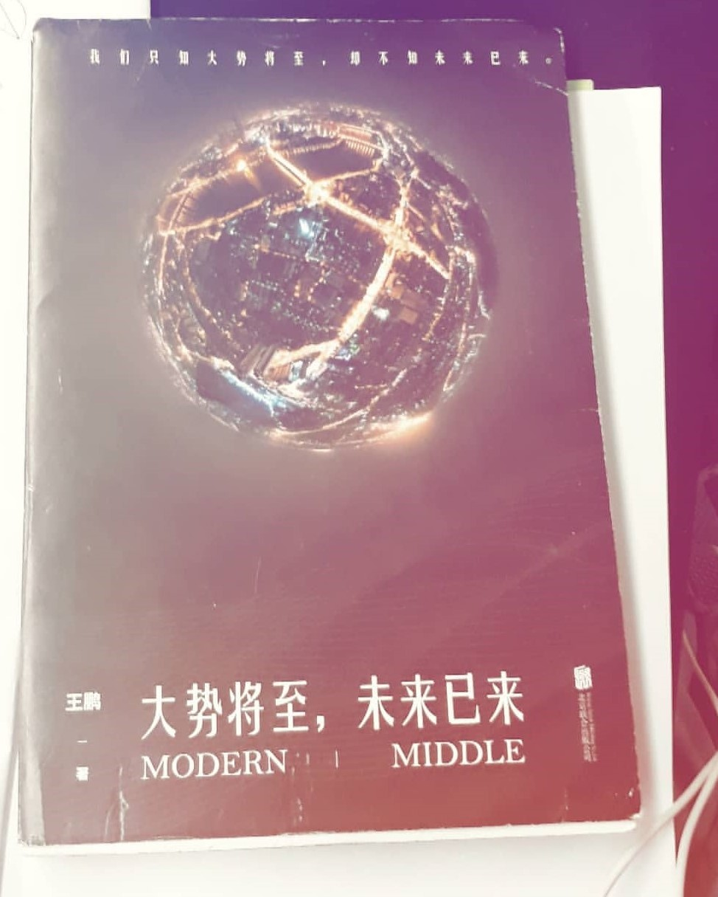
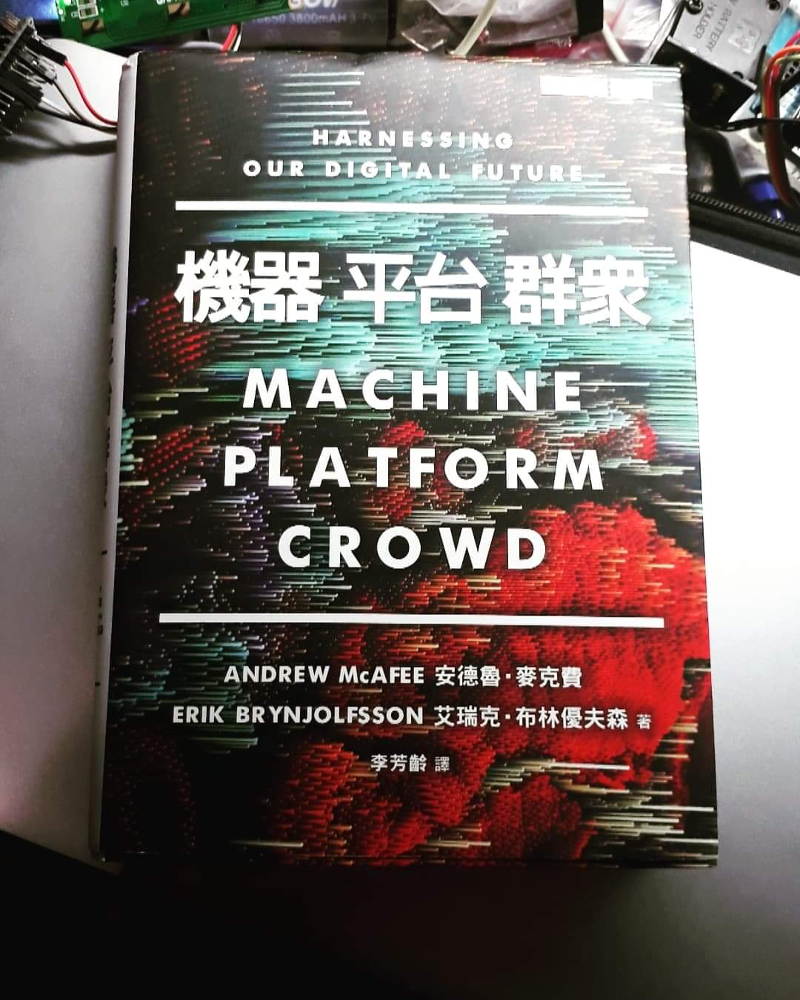
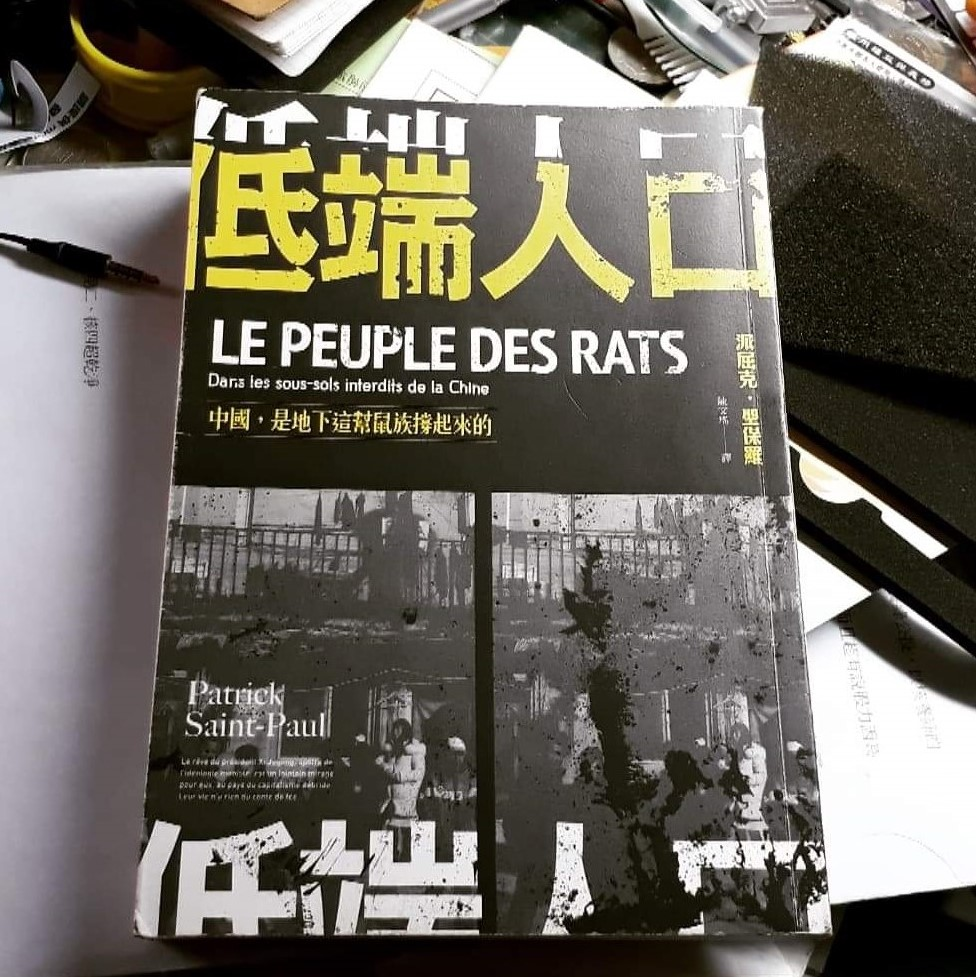
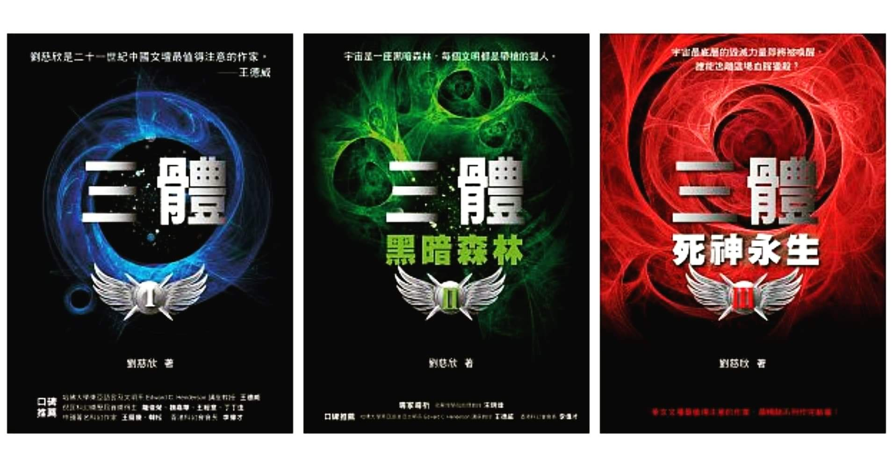
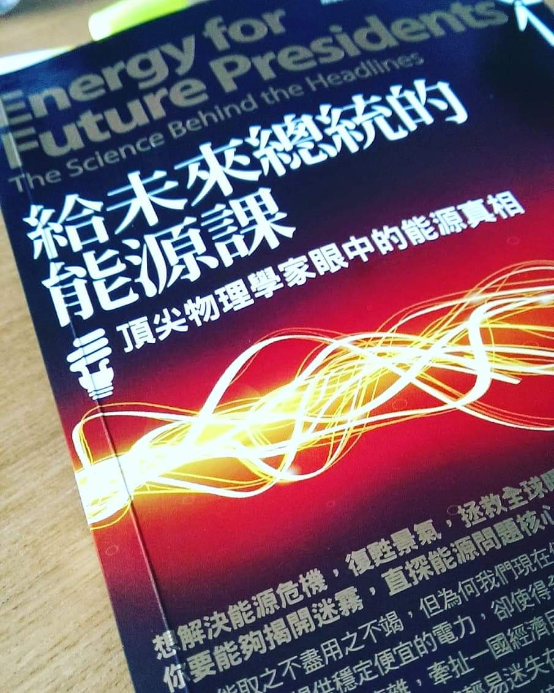
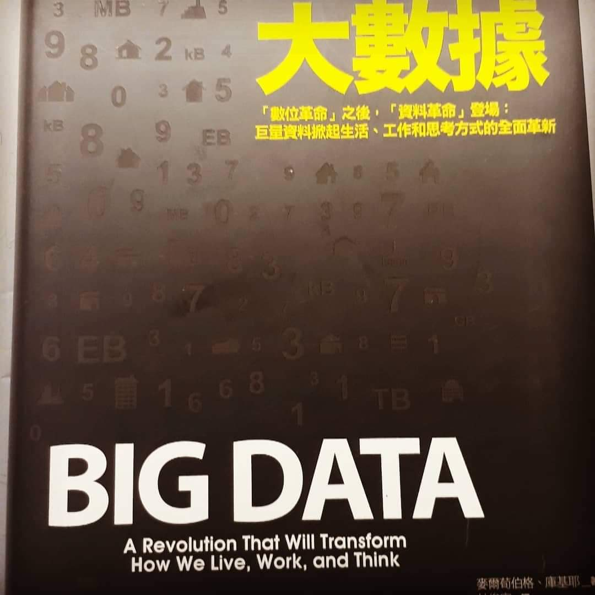
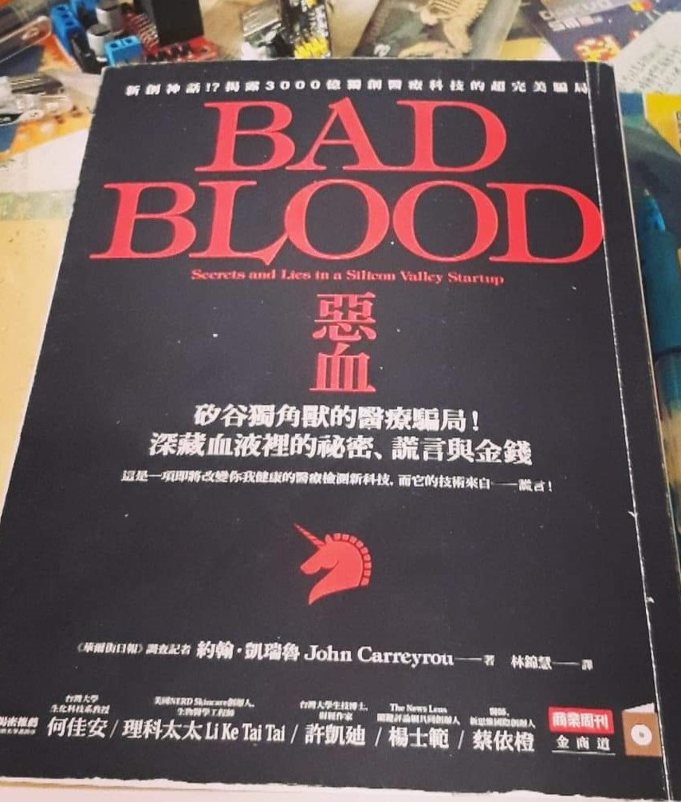
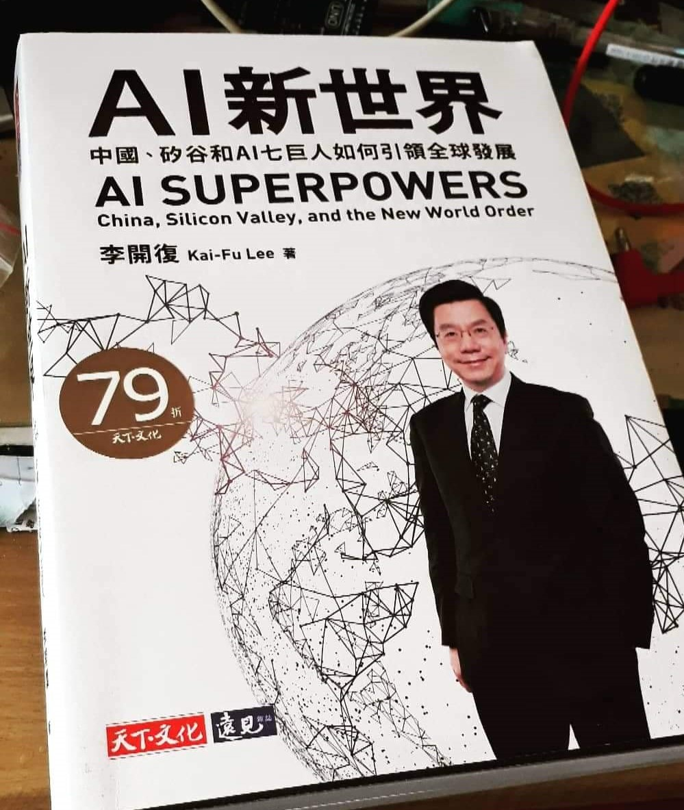
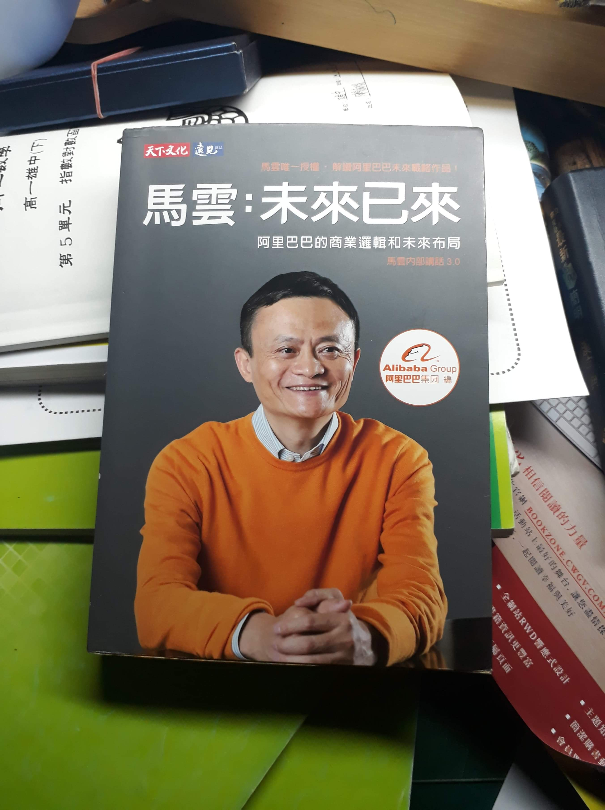
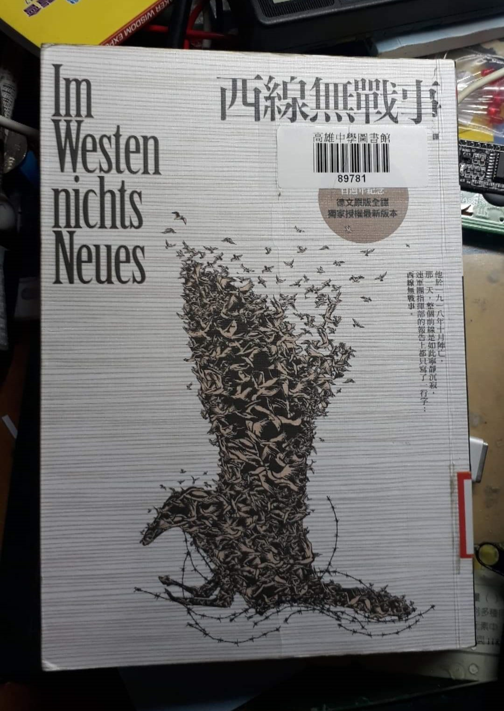

大勢將至，未來已來
小編這禮拜北漂路上就是這本陪我的，如果看得懂簡體字的朋友可以去找來看看，作者的筆觸很美妙，能夠將大時代下的影子襯托出時代的風貌
小編喜歡他寫到的當年中國炒房客身陷豪宅泥灘的故事，以及展望未來巨浪之下我們的渺小與卑微
人工智慧為首的科技革新將帶來的革命已在不遠，此刻的實驗室裡DAPP正在一翻又一翻，波士頓機器的仿生機器人正在逐步往前，而你呢？

機器_平台_群眾
這本書從三個面向去討論眼下科技的三重革命
三個面向都寫得很精彩，讀完你會有一種躍躍欲試的感覺，覺得現在正是出手改變世界的大好時機
的確，深度學習將人工智慧帶到一個完全不同的高度，互聯網也正值高峰，平台獲得了最棒的滋養，群眾推翻核心模式可能還要再等一會，但已開始萌芽
這本書有能力帶給你一個全新的科技觀甚至世界觀

低端人口＿中國是地下這幫鼠族撐起來的
一群為北京賣命只為求一口溫飽的小民們，卻始終離不開「低端」的標籤，鼠族才是這座城市繁榮的關鍵，但受益者卻恨不得將其趕盡殺絕，城市裡的地下廊道成了他們的棲身之處，不見天日是日常，一日半餐是常態，尊重是奢求
真心推薦各位同學看看這本，你就可以體會杜甫的「朱門酒肉臭，路有凍死骨」是什麼感覺了

三體_三部曲
中國在過年期間出現了一部打破票房紀錄的神片「流浪地球」而這部科幻大片的劇本和三體一樣都是同一位作者-科幻界金庸劉慈欣
他筆下的科幻小說每本都是神作，而今天要推的這本三體更是神作中的神作，在三體三部曲中，大劉把真實和科幻融為一體，建構出了一條人類和外星文明接觸的時間線，這條時間線上牛頓和秦始皇和愛因斯坦等人站上同一線、文革的血與淚構築成的恨為人類敲響喪鐘、未知的強大文明讓人類見識到了宇宙的黑暗以及自身的渺小
三體和一般科幻小說的差距除了磅礡的故事、對人性的刻劃外，三體成功的建立了一個某些角度能夠類比真實世界的「三體世界」，不只增加故事的真實性，更增加了三體的價值，大推🖒🖒

給未來總統的能源課
這本是謬勒教授的大作，超愛他開頭引用的一句話「我們最大的問題不是無知，而是知道的很多事情都是錯的」
現在離岸風機、以核養綠、吵的火熱，各家媒體都有著各自的立場，報導的內容又難辨真偽，這本書提供的科學分析就是一帖良藥
作者以科學的角度進行分析，匯集各方的數據與實驗結果，對於能源的利弊與問題進行分析，也打破了不少錯誤的觀念像是「綠色」能源背後的高污染、福島核災＆墨西哥灣漏油事件的真實傷害

大數據
先告知一下最近的文應該會變少一點，大概到段考完才會恢復正常頻率~也祝各位段考順利
這本老編還滿喜歡的，書中給的例子都不錯，而且作者的思緒很清楚，不然有些大數據的書就像鬼打牆一樣，500多頁都在寫類神經網路、機器學習然後應用層面就草草帶過不然就是反過來，這本真的寫的挺不錯的，有興趣的同學可以看看，這部分是未來很重要的趨勢所在，因為人工智慧、電商都離不開大數據的滋養，就像馬雲說的：「未來的機器是靠數據驅動」讀完你就會懂那些工程師、分析師每天在哪裡鑽那些演算法到底為什麼這麼重要了

Bad_Blood
就是這本書害小編段考前一週都不能認真上課，真的滿推這本的，書中的故事幾乎完全都是真實的，作者用一個第三人稱的角度從旁敘述一個由謊言建構的醫療帝國是如何快速崛起又一夕崩塌
書中的精準治療的確是如今醫療發展的一大趨勢，雖然theranos公司失敗了，但是以現在技術的爬升，不久的將來精準治療將會為醫療產業帶來一波新的技術革命
醫療革命的故事，彷彿聖經裡人類企圖搭建巴比倫塔的故事正在重演，但人類已經不再以搭建高聳入雲的高塔為目標，而是讓自己的技術與神無差別，醫療的技術發展不斷突破一道道的門檻，或許有朝一日，我們真的能夠完成那座被阻止的高塔

AI新世界
李開復先生是人工智慧領域的代表人物之一，這本書是他今年7月剛出版的大作，老編品嚐了快半年才看完，李開復不愧是華人AI教父，以專業的背景將人工智慧的過去與未來置入讀者腦中
老編認為最重要的一個part在於數據壟斷，數據壟斷的關鍵點在於，現行的人工智慧背後所使用的技術稱為「深度學習Deep Learning」這種技術仰賴巨量數據的滋養，巨量數據指的億萬筆等級的資料，基本上當數據量越多，人工智慧系統就越強大，而這些資料的來源就是消費者
可想而知，當某公司的人工智慧系統做的越好就越能吸引到消費者，這些消費者就會無形中提供越多數據，讓該公司的人工智慧系統變得更強大，這樣的迴圈下就會形成一個問題，數據都流入單一公司，使得其他公司的人工智慧系統無從競爭，最終產生壟斷的結果
但這未必完全就是場災難，3月時成大黃吉川教授來科工館演講量子電腦主題時，就分享過他對於數據壟斷的相關看法「今天誰都可以欺負你、誰都比你有資源，你就要讓自己變的更強，別人有大數據，你就弄出自己的大數據，別人有量子電腦，你就自己做出你的量子電腦，你還年輕，就如郭文貴說的一樣【一切才剛剛開始】」 除此之外，李開復也在書中討論了人工智慧許多不同面向，真的超推薦有興趣的同學可以看看👍👍👍

馬雲_未來已來
這本對老編的啟發真的頗多，文字很簡單，內容也不會很複雜，原則上你會考國文有C你就看得懂了
這本書裡有很多值得借鑒的看法與思維，從B2B、B2C到新電商的各種概念，這本書都寫得簡單而透徹
馬雲的未來是美好且真實的，今天世界貿易的規則是由大公司所定，小企業從關稅到經營都很吃虧，但是在新電商的未來「天下沒有難做的生意」

西線無戰事
享用完這本神作真的能體會到它所散發出的反戰魔力，作者寫的不只是戰火表面上的殘酷，而是士兵在戰火中是如何被扭曲靈魂
最平凡的小士兵用血淚構築成了時代，而他們的故事也成了最強大的反戰理由，老編很喜歡其中一段「主角躺在彈坑中，不巧地一名法軍士兵跳進同一個坑，主角下意識地用匕首狂刺對方，主角活下來了，但卻只能後悔又無助的看著兩公尺旁無辜的法國士兵慢慢的死去」
它完美的讓讀者看見了戰爭的邪惡，除了奪走無辜的性命，也為更多無辜的靈魂留下了無法抹滅的傷疤